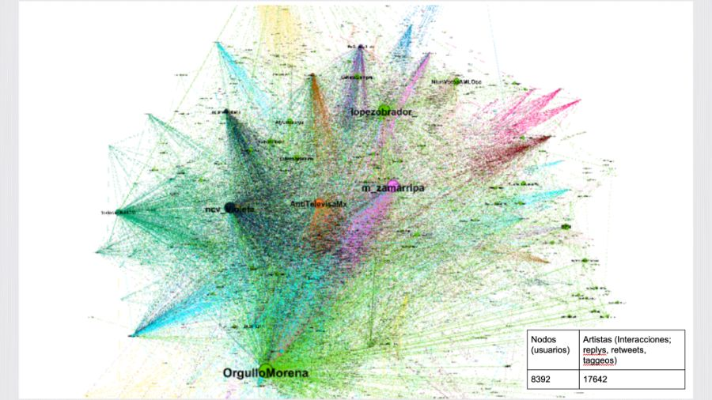
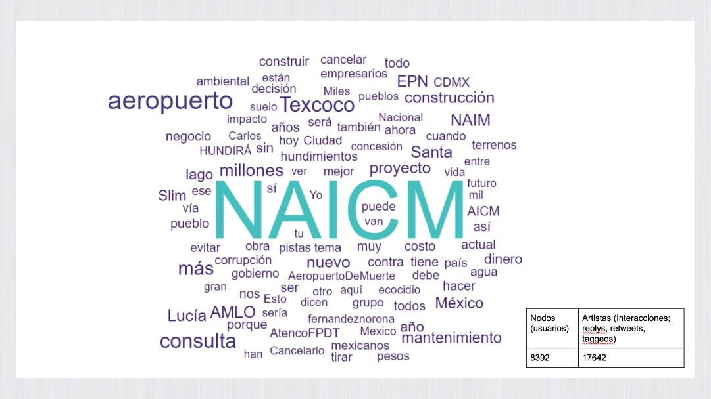
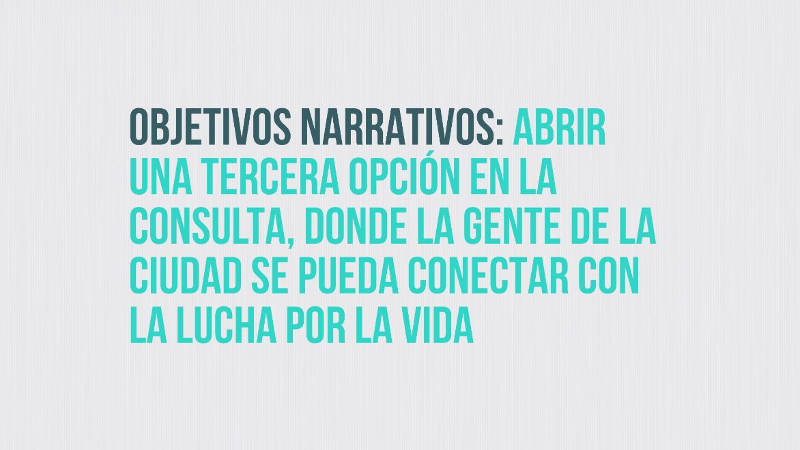

Veamos paso a paso cómo se aplicó esta metodología en la campaña de #YoPrefieroElLago:
1. Cuestionar
El "cuestionar" es un punto de entrada político y estratégico al trabajo narrativo. Cuando "cuestionamos", nos situamos en el terreno narrativo y en las luchas que estamos dando. Nos hacemos preguntas a nosotrxs mismxs. ¿Quiénes somos? ¿Qué nos juntó? ¿Cuáles son nuestros sueños y nuestros miedos? ¿Qué resultados esperamos y qué futuro imaginamos?
Hackeo Cultural
En esta primera etapa se genera un encuentro con 15 mujeres, hombres, niñas y niños de los pueblos lacustres de Tocuila, Acuexcomac y Atenco el día 28 de septiembre del 2018 en el Museo Paleontológico de Tocuila. Allí se produce una práctica narrativa colectiva y se redacta la Carta del lago de Texcoco.
Pueden escucharla aquí:
Más información sobre la carta en http://yoprefieroellago.org/carta/
Algo que han aportado lxs compañerxs de México y Guatemala a la metodología en este paso es tener en cuenta que el cambio es posible pero no es permanente. Esto quiere decir, que el cambio tiende a ser gradual y fluido, por lo que las intervenciones narrativas no deberían estar orientadas a una modificación total, abrupta y permanente.
En este sentido las compañeras nos compartieron una escala narrativa para cuestionar dónde se ubican nuestras voces y propuestas, así como las voces y propuestas hegemónicas.
"Diseñamos una escala en la que creemos que si estamos en el status quo, que es al centro, podemos movernos o podemos hacer cambios que sean alternativos al sistema, que lo desmantelen o que sean complementarios y que lo refuercen. Como el cambio no es permanente, desde #YoPrefieroElLago, creíamos que la narrativa que pudiera desmantelar era la defensa de la vida, y la narrativa que apoyaba o que reforzaba el sistema era la muerte impuesta por el nuevo aeropuerto de la Ciudad de México."
La narrativa del aeropuerto era Progreso y desarrollo, que obviamente reforzaba el sistema.
La disyuntiva que planteaba la consulta popular era: aeropuerto en Texcoco o aeropuerto en Santa Lucía.

Entonces la narrativa que estaba proponiendo el Frente en contra del aeropuerto era Tierra sí, aviones no.
A partir de ubicar las narrativas en esta escala, las compañeras cierran esta etapa en conocimiento de quiénes son, qué les motiva y dónde están.
2. Mapear
Las compañeras nos dicen "Una vez que ya nos ubicamos, que sabemos dónde estamos parados específicamente, dónde están las narrativas, vamos a empezar a mapear los sectores principales que están fortaleciéndolas o apoyándolas." Es decir, en esta etapa se busca localizar actores participantes y dinámicas de poder. El resultado de este proceso debe ser un mapa que nos permita ubicarnos con precisión en el espacio narrativo. Para el caso de #YoPrefieroElLago lxs compañerxs realizaron un análisis de redes y un análisis de medios:

"El análisis de redes lo utilizamos porque creemos que como nos movemos también en un espacio digital muy importante, osea es desde ahí desde donde se producen muchas intervenciones culturales, creemos que es importante saber quienes somos los principales nodos o actores que participan en la conversación."
"Y por otro lado hacemos análisis de medios porque por ese lado reforzamos o entendemos cuáles son las narrativas del poder, es decir, cuáles son las narrativas que los ricos o las empresas o distintos actores políticos están queriendo posicionar. Casi siempre los medios de comunicación utilizan ese… digamos los políticos utilizan los espacios de los medios de comunicación pues para poner en marcha sus narrativas ¿no?"
Recuerden que pueden profundizar sobre la práctica y la teoría de este paso en el Manual de Hackeo Cultural.
3. Comprender
Una vez que identificaron a los actores políticos y sus relaciones se procedió a darle sentido a la conversación. Es decir llegar a entender cuáles son los códigos que se manejan, los elementos centrales del discurso, las motivaciones y lógicas implícitas.

"Una vez que tenemos ese entendimiento de los códigos discursivos, de quéqué se está diciendo y desde dónde se está diciendo planteamos los objetivos de comunicación. Los objetivos de comunicación de #YoPrefieroElLago eran básicamente posicionar la vida y el agua por encima de los intereses económicos, y acercar a la clase media urbana que vive en la ciudad de México al conflicto por el territorio. Es decir, queríamos hacer que la comunicación del Frente en contra del aeropuerto se diera a conocer también en las clases medias y clases altas para que mostraran apoyo y pudieran presionar."
"Una vez que tenemos los objetivos de comunicación hay que decir que es distinto al objetivo narrativo. Los objetivos de comunicación son más específicos y los objetivos narrativos básicamente en #YoPrefieroElLago eran pues abrir una tercera opción en la consulta. Es decir, si desde el status quo se está proponiendo aeropuerto aquí o aeropuerto en otro lado, nosotros queríamos abrir una tercera opción donde la gente se pudiera conectar con la lucha por la vida."

"Una vez que tenemos fijo o fijados estos elementos, estos objetivos muy muy claritos que es importante también para lograr una comunicación efectiva, nos vamos al proceso de recodificar."
4. Recodificar
"La manera en que hacemos recodificación es básicamente tomando los mensajes hegemónicos que hemos identificado y escribimos un mini análisis del discurso en el que vamos encontrando cuáles son los sujetos y los temas, cuáles son las imágenes y metáforas que existen detrás de ese mensaje hegemónico, lo pasamos a través del objetivo narrativo, que es la defensa de la vida y del territorio en el caso de #YoPrefieroElLago, y construimos de nuevo un mensaje recodificado."
El objetivo de esta recodificación es dar vuelta al mensaje hegemónico con un mensaje emblemático que condense nuestros objetivos comunicacionales y narrativos.
Durante la etapa de re-codificación, articulamos un mensaje emblemático de la narrativa dominante a la que nos estamos enfrentando. Arribamos a este mensaje a través de procesos de analizar redes y lenguaje disponible y, a través del encuentro de nuevos marcos/encuadres que permitan a la narrativa tener sentido. Esto se hace mediante un ejercicio que sitúa el mensaje emblemático como "punta del iceberg" y recorre las metáforas, acciones, temas y supuestos que lo sustentan, descodificando la lógica que sostiene la narración. A continuación, aplicamos el proceso inverso, construyendo desde la base un mensaje que contenga nuestra contranarrativa deseada.
Hackeo Cultural
En el caso de #YoPrefieroElLago, esta etapa se realizó de la siguiente manera:
A partir de esta recodificación, comienza la búsqueda de un meme (más sobre esto en la próxima sección) que resuma todos esos puntos neurálgicos que queremos comunicar. Este es un momento crucial "y es un proceso complicado, no es como que llegamos así por arte de magia a #YoPrefieroElLago. Muchas personas dicen '¿pero y cómo se les ocurrió?'. Y la verdad es que fue un proceso de bastante como ir buscando y hacer prototipos ¿no? Y esa parte de hacer prototipos tiene que ver con la intervención."
5. Intervenir
"Lo importante del proceso de Hackeo Cultural es justamente identificar cuál es la conversación en la que podemos generar una intervención en el momento político en el que estamos." (Sobre reconocer el momento preciso para intervenir profundizaremos con #ElijoDignidad)
En este caso, el llamado a la consulta popular fue el momento más propicio para intervenir en la conversación. ¿Pero cómo hacerlo y qué decir?
"A todas y a todos los que estábamos involucrados en la lucha nos encantaba el mensaje de Tierra si Aviones no, porque impactaba, clarificaba". Pero era una posición que se mostraba en la antípoda y no promovía una conversación. "Y si nos están planteando aeropuerto en un lugar o aeropuerto en otro lugar entonces no nos estaban consultando nada de fondo."
"Entonces como una forma importante de cómo es ir haciendo una comunicación estratégica es que justamente vamos un pasito a pasito a donde queremos llegar que es Tierra sí, aviones no. (...) la idea de #YoPrefieroElLago abría una tercera opción que no estaba en la boleta de la consulta, a la que muchas personas decidieron y asumieron sumarse."
Una vez encontrada la consigna/meme y a la hora de pensar las producciones en sí es clave tener presentes los objetivos de comunicación (recordatorio: en este caso uno era acercar a la clase media urbana que vive en la ciudad de México al conflicto por el territorio).
"Nuestro público era sobre todo urbano, y un público al que podíamos hablar desde redes sociales el conjunto de organizaciones no tenía el dinero del aeropuerto y no tenía el dinero del gobierno entrante para difundir el mensaje que queríamos. Entonces sabíamos que por un lado queríamos que las comunidades se sintieran identificadas, pero que también fuera un lenguaje visual digerible para esta como comunidad urbana que iba de alguna manera a ser la decisiva en el momento de la consulta."

En este momento es importante "empezar a conectar intervenciones en línea que también tengan una repercusión offline, y al contrario también ¿no? cómo hacemos la intervención en la calle para que tenga una repercusión en la narrativa virtual."
Uno de los puntos fuertes de Hackeo Cultural es su monitoreo de la actividad en redes. Esto les sirvió para tomarle el pulso a la intervención. En este caso, hicieron un análisis de la conversación en twitter unos meses antes de la intervención. Por esos momentos el panorama de la conversación sobre atenco se veía así:
"esto lo hicimos durante un par de meses y era realmente muy poco lo que se estaba hablando, las voces de los pueblos no estaban en la conversación sobre el aeropuerto. Pero posterior a la campaña y esta intervención narrativa la conversación se super complejizó."

"Entraron a esa conversación muchísimas personas de diferentes espacios, entró la gente que había recientemente votado por el nuevo presidente, entraron los ambientalistas, entraron las comunidades en resistencia, entraron los espacios organizados que ya habían previamente generado redes, entonces yo sé que esto quizás no es ahorita muy comprensible de qué es, pero esto era una gran conversación muy compleja, muy diversa y muy descentralizada. Eso era parte de lo que nos interesaba a nosotros."
"En el día de la consulta lo que pudimos observar es que había de esta gran bola de gente que estaba hablando al respecto podíamos perfilar tres comunidades digamos en particular que estaban hablando sobre distintos temas. Y digamos que son no comunidades particularmente porque estuvieran afiliados a un grupo particular sino porque estaban teniendo interacción entre ellos y eran las personas que al inicio estaban hablando en contra del aeropuerto de Texcoco, que estaban hablando a favor de Santa Lucía, tenían mucho que ver pues con los aliados políticos al régimen que ahora existe que es la cuarta transformación y por el otro lado la oposición que era bastante de derecha era la que estaba insistiendo en el aeropuerto de Texcoco."
"Lo que pudimos ver a través de esto es que donde había solo dos opciones la campaña terminó por gestar una tercera opción, que además era la conversación más interesante. Porque era donde se estaban hablando de distintas cosas: osea alrededor de la defensa del lago, sí, pero también de la lucha de los pueblos, también con respecto a cuestiones científicas, alrededor del impacto medioambiental del posible aeropuerto, la zona de recarga de agua, etcétera. Entonces esto lo que nos ayudó a ver fue un poco cómo se transformó la conversación, no solo a un nivel de amplitud de los mensajes, sino a crear una nueva narrativa a la que nos pudiéramos unir."
Desde el equipo de producción nos quedamos sumamente interesados en la herramienta para visualizar la conversación en redes, sobre todo al momento de tomarle el pulso a la conversación en los momentos de intervención, por lo que les pedimos profundizar un poco sobre eso:
"La herramienta en particular que utilizamos es Gephi. Hacemos descarga de datos de Twitter y esto lo mapeamos en Gephi que es una herramienta de estadística. Es un poquito técnico pero no es muy complicado. Es complicado en el sentido en que no todo ocurre en twitter. Entonces en este caso tenía mucho que ver con que era una campaña que sabíamos que se podía mover bien por ahí y que teníamos como la capacidad para hacer ese seguimiento. Fue un método muy útil para ver el tipo de recibimiento que tenía a nivel redes, pero también fue importante al mismo tiempo estar checando el nivel de recibimiento que tenía por ejemplo la campaña en las comunidades, eso fue relevante porque vaya, una vez que fuimos a ver que había una apropiación por parte de las comunidades eso quería decir que estábamos haciendo las cosas medianamente bien. También un poco estuvimos haciendo el análisis de medios a nivel de qué tanto se mencionaba la campaña. La campaña en sí mismo no figuraba en los medios, pero sí iba creciendo la cantidad de información alrededor del conflicto, entonces esto también ayudaba. En fin, hay varias digamos métricas que utilizamos para ir haciendo este seguimiento. Con Gephi es muy útil… pues sí, necesitas una conversación que esté bastante activa en twitter, pero bueno, tiene esa funcionalidad. Y pues para hacer este seguimiento cualitativo tenía mucho que ver con el constante contacto que teníamos tanto con la plataforma un poco más amplia que estaba en este proceso de la campaña como con las comunidades."
Es clave comprender esta amplitud de la conversación, no todo ocurre en las redes. Para graficarlo de alguna manera en el siguiente esquema a la escala inicial se agrega otra dimensión relacionada a la forma de conocimiento.
"Algo importante que mencionar es que en este momento fue muy útil que, si bien la campaña era un poco abierta, #YoPrefieroElLago pues significaba muchísimas cosas. Y vimos que esto se retomó desde muchos otros espacios. Entonces sí, claro hubo una campaña muy fuerte en redes, hubo mucha producción para medios, hubo varias acciones en calle, pero la cantidad de foros, conferencias, conversaciones que se realizaron de grupos que no estaban necesariamente dentro de la campaña y pero que lo estaban retomando y que estaban tomando la oportunidad para hablar de esto, fue muy importante. Porque generó otro tipo de viralización digamos, dentro de las universidades, dentro de espacios de lucha y organización, entonces eso digamos que le dió muchísimo más músculo a una campaña que en sí misma tenía digamos un mensaje claro pero quizás no tenía toda esa estructura detrás."